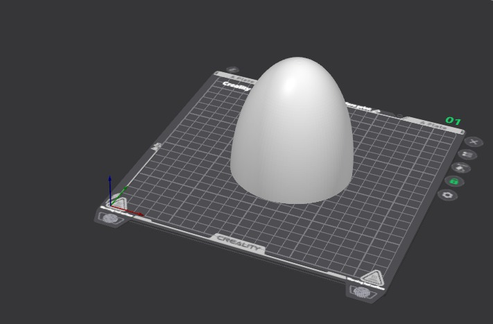
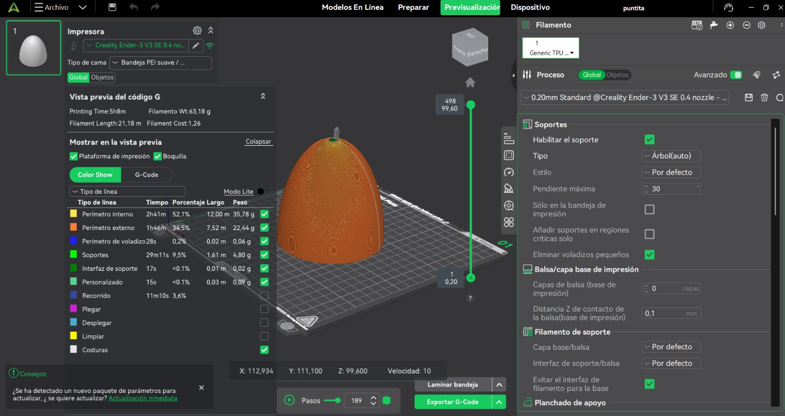
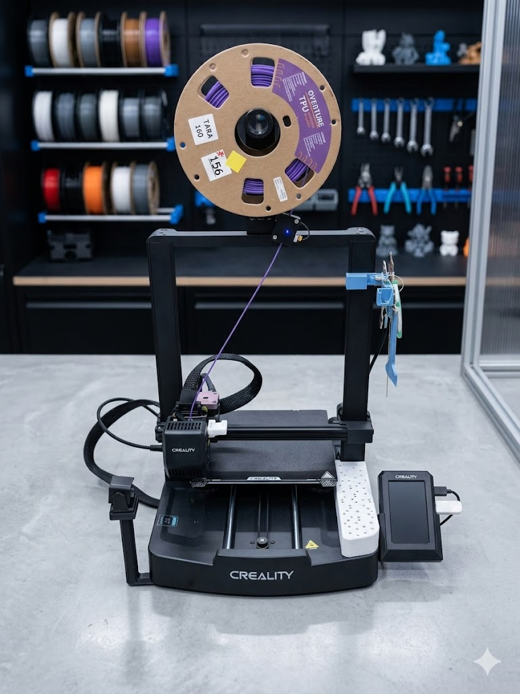
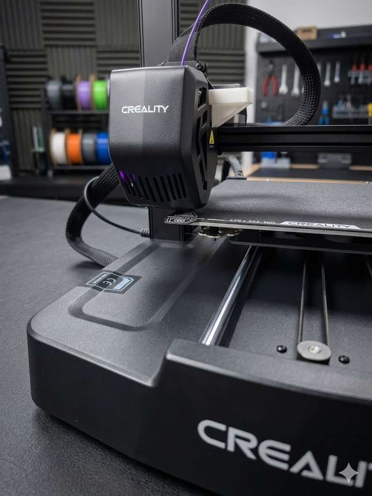

TFG · Diseño y Fabricación Aditiva · 2024
Diseño, laminado e impresión 3D en TPU
para cohete de agua de alta presión
El TFG de Unai aborda la optimización aerodinámica y balística de cohetes impulsados por presión de agua. Aunque aparentemente simples, estos cohetes plantean desafíos reales: estabilidad en vuelo, eficiencia de la tobera y capacidad de absorción del impacto en el aterrizaje.
Para la fase experimental, el proyecto necesitaba una punta de nariz intercambiable y reutilizable: una pieza capaz de soportar aterrizajes repetidos sin fracturarse, y fácil de fabricar para iterar distintos perfiles aerodinámicos.
La fabricación aditiva era la vía obvia. El verdadero problema de diseño era la elección del material correcto.

La geometría sigue un perfil ogival tangente, optimizado para minimizar la resistencia aerodinámica a baja velocidad. La transición suave entre el cuerpo cilíndrico y el extremo cónico reduce la turbulencia en las primeras fracciones de segundo tras el lanzamiento.
El modelo incorpora un encaje de fricción en la base para unirse al tubo del cohete sin tornillos — fundamental para una instalación y retirada rápidas entre vuelos.

El TPU exige ajustes específicos frente a filamentos rígidos. Su naturaleza flexible obliga a reducir velocidad de impresión y minimizar la retracción para evitar atascos en el extrusor Bowden.
La estrategia de capas prioriza la resistencia al impacto: paredes gruesas con cuatro perímetros, relleno en patrón giroide al 25% para absorción isotrópica de energía, y capa de 0.2 mm para superficie exterior precisa.
Por qué gyroid: el patrón de relleno giroide distribuye las fuerzas de impacto de forma isotrópica — igual en todas las direcciones. En una pieza que aterrizará con ángulos distintos en cada vuelo, esto garantiza una absorción de energía consistente sin zonas débiles localizadas.
Con el fichero laminado y los parámetros validados, la pieza entra en producción. El TPU exige atención en las primeras capas: la adhesión a la cama es crítica, ya que el material flexible tiende a despegarse si la temperatura o la altura del primer layer no son exactas.


El tiempo total de impresión fue de aproximadamente 2.5–3 horas a baja velocidad. La reducción a 30 mm/s es el coste de trabajar con TPU en extrusor Bowden: a esa velocidad el filamento flexible no tiene tiempo de pandearse dentro del tubo, garantizando una extrusión constante sin interrupciones.
La pieza final cumple todos los requisitos funcionales. La punta de nariz en TPU absorbe los impactos de aterrizaje deformándose elásticamente y recuperando su forma — sin fisuras, sin delaminación, sin degradación visible tras múltiples lanzamientos.
Esto convierte al cohete en un sistema completamente reutilizable, fundamental para el carácter experimental del TFG: Unai puede lanzar, recuperar y relanzar sin coste de fabricación adicional ni pérdida de datos entre vuelos.
Se deforma al contacto y recupera su forma original. Sin roturas, sin fisuras.
Una sola pieza aguanta decenas de vuelos. Coste marginal por lanzamiento: cero.
El encaje de fricción permite cambiar la punta en segundos para iterar distintos perfiles.
El proyecto demuestra que la elección del material es tan decisiva como el diseño geométrico. Una punta en PLA hubiera sido más fácil de imprimir, pero se habría fracturado en el primer aterrizaje. El TPU, con sus exigencias de proceso, es la única opción real para este caso de uso.